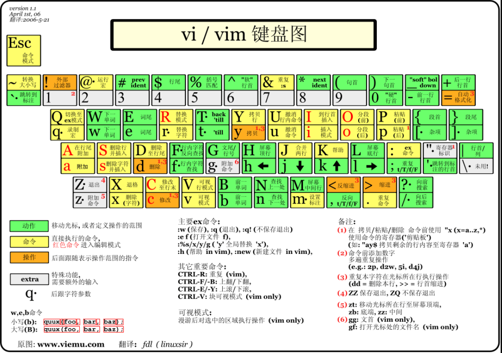
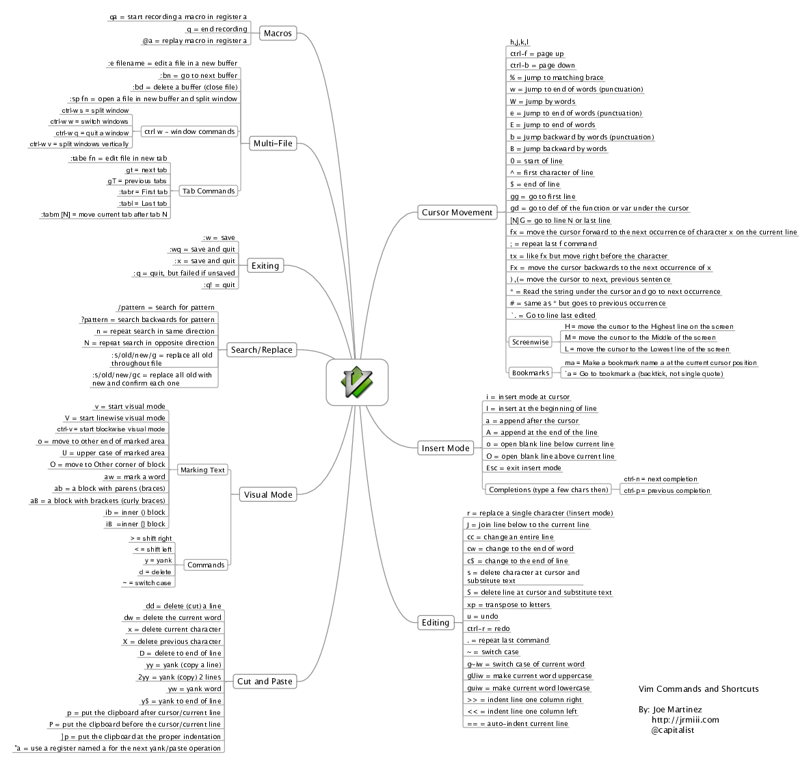

ubuntu 踩坑日记
最后更新于：2022年6月25日 下午
Mac M1 上装 ubuntu 的想法已经破灭（不会再去浪费时间了），Hyper-V 也弃坑了，双系统才是正途
Win/Ubuntu 双系统
在另外一台 华为笔记本 上装 ubuntu 双系统
- 清华/交大/中科大/腾讯 镜像站下 Ubuntu
- 用 Ultraiso 写入 U 盘
- 在 Windows 用自带的磁盘工具开好空间 128G
- 进入 BIOS 安装，切记不要自动登录，会很麻烦
- 进入 software update 选择中科大源
之前 微软 开源三板斧：github, vscode, wsl 用的挺好的。但是 wsl 无法开启音视频，从而选择了双系统。
Hyper-V 装 Ubuntu
Windows 10 家庭普通版也能使用，网上有简单教程
- Hyper-V 全屏：https://www.jianshu.com/p/22cffcc4d5b9
- Hyper-V 物理机/虚拟机 共享复制粘贴：https://www.cnblogs.com/kendoziyu/p/14741360.html
最后网络把我搞的心态爆炸，直接全给它删了，毁灭吧，烦了
装好系统后准备工作
- 修改 ubuntu 的
/etc/default/grub的默认选择延迟为 5s。然后sudo update-grub如果要默认 windows 可以修改对应的 BIOS 为 windows 优先启动，启动 Ubuntu 可以通过 BIOS 进入
- 更换上交镜像源, 或者中科大镜像源（直接再
Software & Update中选即可，不用手动改/etc/apt/sources.list） - 设置中搜索 font，开启 Large Text
- apt update, apt install, apt upgrade
- 安装 vscode, curl, vim, xsel（剪切版）, htop, tmux, perf, sagemath, haskell
- python2, pip2(软链到
/var/bin/) 安装 deepin-wine 以及 deep wine for ubuntu，然后就能用apt install com.tab 之后就能看到一些本来 ubuntu 无法安装的软件安装 tweak, gnomealias open=nautilus（ubuntu 22.04 不再需要）- 利用 scp 文件传输（目标机器需要开启端口）然后保持两台电脑在一个局域网上然后查看各自 ip，然后推流：
1
2
3sudo apt-get update
sudo apt-get install openssh-server
sudo ufw allow 22scp -r xxx/ username@10.xxx.xxx.xxx:~就可以把本机 xxx/ 下所有文件传输到对应 ip 的机器上。也可以拉流：scp -r username@10.xxx.xxx.xxx:xxx/ . - kill 杀死进程需要配合 top 查看 pid，但是 pkill 可以直接根据进程名杀死进程
- 按住一个 htop 比 top 好用不少，mac 上也可以用 homebrew 安装
- Ubuntu 显示时间到秒：
gsettings set org.gnome.desktop.interface clock-show-seconds true bash 中显示 git 分支 效果很差，没啥意义
sudo apt-cache search是个好东西，sudo apt install -y也是
笔记本设置盒盖不休眠
https://www.jianshu.com/p/3fe469fc60c9
如果设置了不用 笔记本 的显示器，貌似就不用这么设置了
升级
- 18.04 —> 20.04：
sudo sed -i 's/binoic/focal/g' /etc/apt/sources.list然后sudo apt update再sudo apt -y dist-upgrade - 20.04 —> 22.04 同理（
s/binoic/focal/g改成s/focal/jammy/g），有风险
低版本 Ubuntu 安装高版本软件
问题收集
无法外接显示器
https://askubuntu.com/a/1251457
网络问题
如果无法连接 wifi，三种方式联网
- 有线
- 安卓手机 Usb 连接到电脑，然后手机个人热点里设置 usb 共享网络
安卓手机蓝牙连接电脑，然后手机个人热点里设置蓝牙共享网络
ubuntu 18.04 切记关闭 secure boot
- 安装驱动
- 有 wifi 图标无 wifi 列表
也可以连好网络后可参考 https://juejin.cn/post/7022521662880874527 再不行可参考 https://blog.rottenwifi.com/ubuntu-no-wifi-adapter-found/，可能需要安装：backport-iwlwifi-dkms，如果还是不行，建议重新换个镜像安装（一般是硬件不匹配导致的），是在不行换镜像
VPN 配置
- 安装 openfortivpn
- 编辑
/etc/openfortivpn/config如下
1 | |
安装完无法进入系统
如果还不行，可以尝试进入 BIOS 关闭 safe boot
重装 win10 后，Ubuntu 找不到了
可参考：https://bktus.com/zh-cn/archives/2920
僵尸鼠标
开启后多一个僵尸鼠标：https://forum.ubuntu.org.cn/viewtopic.php?t=491536
登陆后花屏
可参考 https://blog.csdn.net/supe_tan/article/details/78336133
删除安装失败的包
sudo dpkg --configure -a 查看安装失败的包，删除掉它们 sudo dpkg --remove --force-remove-reinstreq package_name
也可参考 https://ubuntuqa.com/article/10754.html 操作
system program problem detected
out of sight, out of mind，不让它显示就行了
先删除 /var/crash/ 中的所有文件，再把 /etc/default/apport 中的 enable=1 改成 enable=0
Ubuntu 开机慢
参考 https://blog.csdn.net/qq_35251760/article/details/111037280
开机自启动
在 /etc/init.d/ 中新建一个 my.sh，然后参考其它的 .sh 的写法，写好之后记得 ./my.sh 跑一下确保本身无误（没权限的话 chmod +x）
参考：https://www.cnblogs.com/Areas/p/13439000.html
windows 时间差了 8h
管理员权限打开 PowerShell 然后输入：reg add HKLM\SYSTEM\CurrentControlSet\Control\TimeZoneInformation /v RealTimeIsUniversal /t REG_DWORD /d 1
参考：https://www.jianshu.com/p/cf445a2c55e8
apt-key
1 | |
keyserver.ubuntu.com有时需要改成ktp://keyserver.ubuntu.com:80或者ktps://pgp.mit.edu，可参考这里：https://superuser.com/questions/1250681/why-am-i-unable-to-fetch-pgp-keys-from-commandline
ubuntu添加源后，更新提示缺少公钥，详细可参考官方文档
再不行的话: https://einverne.github.io/post/2019/09/gpg-keyserver-receive-failed-server-indicated-a-failure.html
GPG
zsh 配置
先参考 oh my zsh 安装详解，再看 字体安装，然后 terminal 选择 custom command: /usr/bin/zsh，最后还需要把 VScode 的 terminal 中添加字体 为 Noto Mono for Powerline
添加下面配置
1 | |
拓展分区大小
用着用着就觉得 Ubuntu 比 Windows 用的多，而且给同事一个用户账号导致空间不足，然后我去查了一下分区方式。总结下来步骤如下
- win + r 打开 diskmgmt.msc 然后压缩出一块（未分配的）空间出来
- 找一个有 ubuntu 的 U 盘作为引导盘，然后开机的时候进入 BIOS，然后调整 U 盘作为启动盘
- 然后它默认有 gparted，然后 sudo gparted 就可以拓展 Ubuntu 的分区，点确定。重启即可
弱网环境
查看当前的网络情况
nload -m 一般会出现一个 Device lo [127.0.0.1] 还有另外一个 Device（这一个后面会用，比如我的是 wlp1s0），如果没有安装就 sudo apt 安装一下。
然后进行弱网设置
1 | |
小功能合集
1 | |
perf 的使用
首先直接输入 perf 会提示你安装一些 tool，安装好之后，
- 设置
/etc/sysctl.conf，添加一句kernel.perf_event_paranoid = -1，然后sudo sysctl -p /etc/sysctl.conf， - 再
sudo sh -c "echo 0 > /proc/sys/kernel/kptr_restrict"，不然没有符号
使用和现实可以用 speedscope) 或者 FlameGraph 可以参考 Linux笔记-性能调优工具perf
Vi(m) 入门
所有类 Unix 系统都自带 vi，所以学习 vi 收益满满！
vi(m) 工作模式图解

| 常见命令（区分大小写) | 含义 |
|---|---|
gg |
移动到当前文件的第一行 |
G |
移动到当前文件的最后一行 |
M |
移动到当前文件的中间一行 |
Ctrl + o |
移动到上一次编辑的地方 |
:n ， 其中 n 为数字 |
输入一个 :，再输入一个 数字，按回车，快速跳到某一行 |
ndd，其中 n 为数字（不写默认为 1） |
删除光标所在的行，并且内容在剪切板 |
nyy，其中 n 为数字（不写默认为 1） |
复制光标所在的行，并且内容在剪切板 |
D |
删除 光标 到行 末尾 所有的内容，并且内容在剪切板 |
p |
粘贴剪切板的内容到光标处 |
/word |
向光标之下寻找一个名称为 word 的字符串 |
?word |
向光标之上寻找一个字符串名称为 word 的字符串。 |
n |
这个 n 是英文按键。继续搜索下一个目标 |
N |
这个 N 是英文按键。与 n 刚好相反 |
Ctrl + v |
进入列选择模式 |
Shift + v |
进入行选择模式 |
u |
复原前一个动作 |
Ctrl+r |
重做上一个动作 |
Ctrl+n |
常规（Normal）补全 |
Ctrl+o |
全能（Omni）补全 |
.vimrc 超简洁设置
1 | |
vi(m)键盘图

vi(m) 命令思维导图

Linux Shell 入门
在一般情况下，人们并不区分 Bourne Shell 和 Bourne Again Shell，所以，像 #!/bin/sh，它同样也可以改为 #!/bin/bash。
Hello Shell
vim test.sh 编辑下面内容
1 | |
esc + :wq 保存，执行下面命令
1 | |
Shell 变量
1 | |
变量定义
=两边不能有空格！
Shell 字符串
1 | |
Shell 传递参数
$n：传入参数，例如：$0 $1 $2分别表示，脚本名，第一个参数，第二个参数$#：脚本后面跟的参数个数（不包含脚本名)$@：所有参数，并且可以被遍历$*：所有参数\$$：当前脚本的进程 ID (没有\)$?：上一条命令的退出状态
Shell 数组
1 | |
Shell 运算符
- 算数运算符：
+ - * / % = == != - 关系运算符：
-eq -ne -ge -lt -gt -le - 布尔运算符：
! -o -a（取否，or，and） - 逻辑运算符：
&& ||，需要：[[ expr ]] - 字符串运算符：
= != -z -n $ - 文件测试运算符：
-b -c -d -f -g -k -p -u -r -w -x -s -e
1 | |
expr 是一款表达式计算工具，使用它能完成表达式的求值操作
条件表达式要放在方括号之间，并且要有空格，例如L：
[$a==$b]是错误的，必须写成[ $a == $b ]
Shell printf 命令
printf format-string [arguments...]
例如： printf "%-8s = %10.4f\n" pi 3.141592653
%s %c %d %f都是格式替代符
%-8s指一个宽度为 8 个字符（-表示左对齐，没有则表示右对齐），如果不足则自动以空格填充，超过也会将内容全部显示出来。
Shell 流程控制
条件控制
if else-if else已经在上面例子中提过了。case esac的奇葩写法，吐了1
2
3
4
5
6
7
8
9
10
11
12
13
14
15echo '输入 1 到 4 之间的数字:'
echo '你输入的数字为:'
read aNum
case $aNum in
1) echo '你选择了 1'
;;
2) echo '你选择了 2'
;;
3) echo '你选择了 3'
;;
4) echo '你选择了 4'
;;
*) echo '你没有输入 1 到 4 之间的数字'
;;
esacread输入快乐啊！
循环控制：for while until break continue
1 | |
Shell 函数
1 | |
Shell 输入/输出重定向和文件包含(特别好用！)
1 | |
test2.sh 中调用 test.sh：
source ./test.sh管道运算符
|，是 unix 一个很强大的功能。command 1 | command 2
把第一个命令 command 1 执行的结果作为 command 2 的输入，例如:
$ ls -s|sort -nr